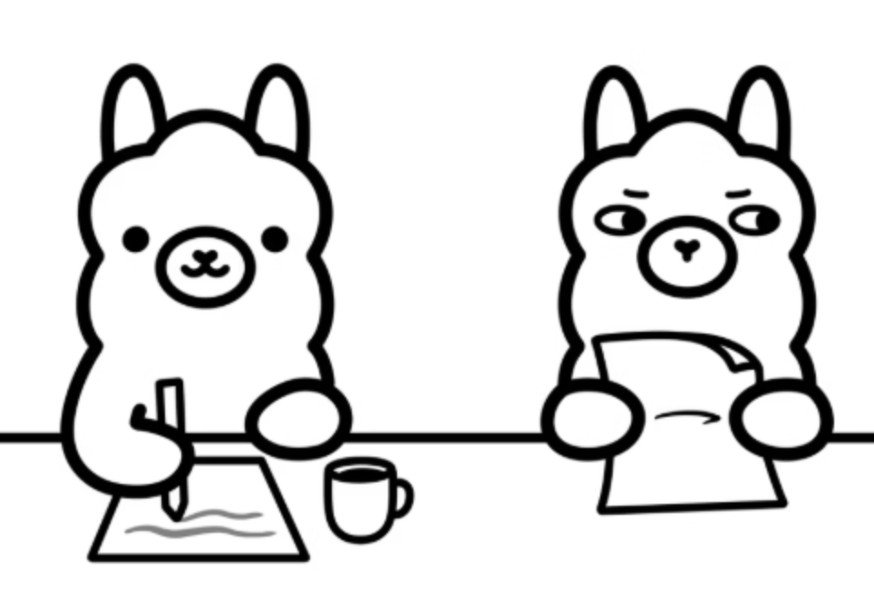
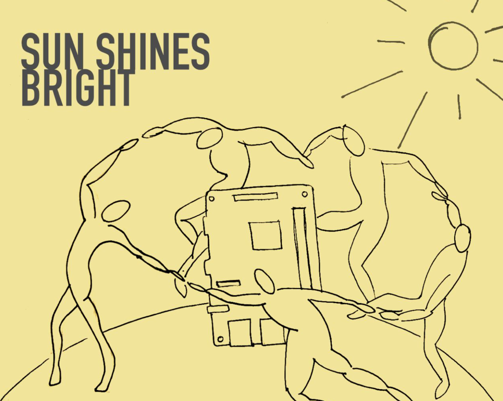
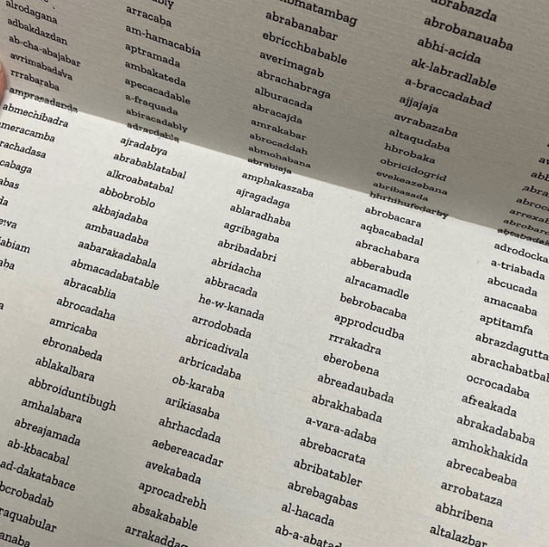

Project 3: Text Models

Build a local, private LLM system using Ollama and RAG (Retrieval-Augmented
Generation) that runs entirely on your computer. You'll create a chatbot that
answers questions based on documents you provide.
Alternatively
you may train a microGPT instead (see bottom of this text for
directions)
Questions to consider:
-
What knowledge do you have that deserves a dedicated AI assistant?
-
Who would benefit from easy access to this information?
-
What would a corporate LLM get wrong about this topic?
-
Why does privacy matter for this knowledge?
-
How might keeping AI local change what's possible?
---------------------------------------------------------
Create a curated document collection
see:
Working with RAG:
---------------------------------------------------------
INSPO

Computational Mama (aka Ambika Joshi), Sun Shines Bright: https://solararchive.cmama.xyz/
---------------------------------------------------------
MICROGPT
Alternatively, if you would rather train a
model from scratch only on your own data you could work with
Microgpt.
See https://github.com/AaratiAkkapeddi/microgpt
for instructions
---------------------------------------------------------
Inspo: 
Allison Parish
Apotropaic
Variations
Each
200 (of 10,000) Apotropaic Variations is one of a set of 50, containing 200
computer-generated magic words, printed so that they can be easily cut out.
This allows each word to be worn on one’s person or to be ingested for
protective effect.
---------------------------------------------------------
**DUE WEEK 6***
In discord submit a google drive link containing:
-
your text corpus (5-20 documents you used)
---------------------------------------------------------
**DUE WEEK 7***
Train your model using the RAG method OR the Microgpt method we
went over in class and your own text corpus.
In discord submit a google
drive link containing:
In discord submit a google drive link containing:
-
your text corpus (5-20 documents you used)
-
question-answer pairs from your trained chatbot (can be screenshots of you interacting with it) OR output from your MicroGPT model
- A text document answering:
-
what did you use to teach your AI and why?
-
What context could this be used (Art is a welcome context!)? Who is this for?
-
Back to projects